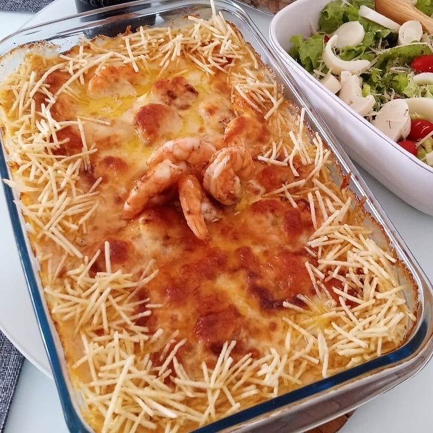

Frutos do mar · Camarões e frutos
Camarão imperial

Ingredientes
- 2 kg de camarão com casca
- Sal e pimenta-do-reino a gosto
- 4 colheres (sopa) de suco de limão
- 4 colheres (sopa) de azeite
- 6 tomates
- 4 cebolas grandes em pedaços
- 6 colheres (sopa) de maisena
- ½ xícara (chá) de leite
- 6 gemas
- 2 colheres (sopa) de coentro picado
- 2 queijos tipo catupiry (440 g)
- 6 claras
Modo de preparo
- Limpe os camarões e tempere com sal, pimenta e limão. Reserve.
- Bata azeite, tomates e cebolas; cozinhe cerca de 30 minutos, mexendo de vez em quando.
- Dissolva a maisena no leite, misture às gemas e cozinhe com os camarões até engrossar. Junte o coentro.
- Distribua o catupiry no fundo de forma refratária; cubra com o camarão. Bata as claras em neve, espalhe por cima e asse a 250 °C por uns 10 minutos, até dourar.
Observação: requeijão de copo no lugar do catupiry; salsinha no lugar do coentro.